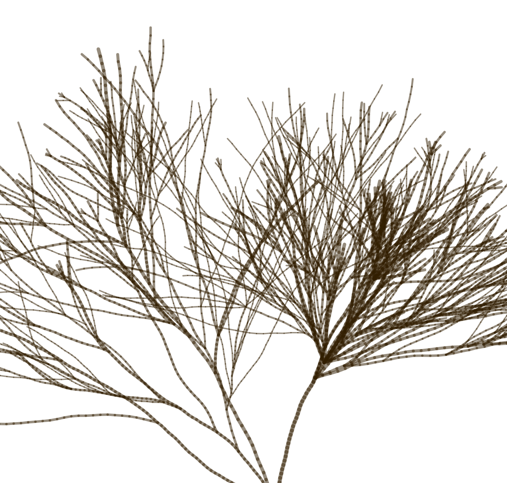
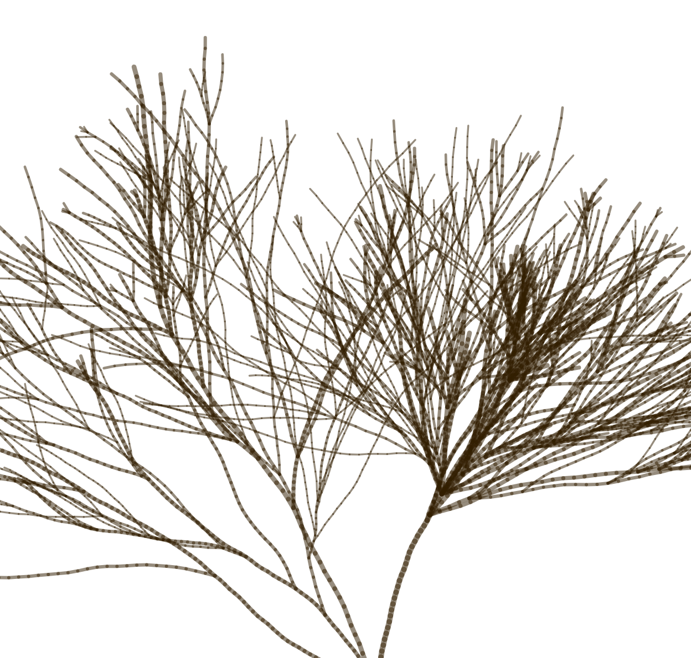

The Code Of Nature
Branching of Small Bushes
!noch nix fertig! Welcome to the Code of Nature where inspiration was found on Amrum, North Frisia.
How can we put movement from nature into code? My attention, first focused on the movement of waves, was quickly drawn to small bushes all over the island. From my window I saw nothing but them and therefore, thinking of the project, I wanted to know more about this growing process. This branching.


With a foundational code I experimented and tried to match the real bush from my photos. But to get more abtract I
 

That's it! Thank you for looking through this stuff.